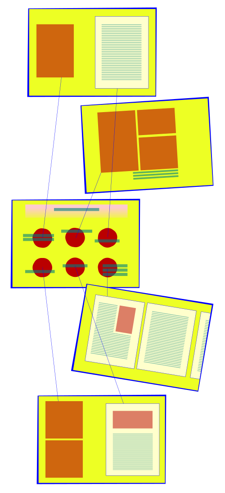

The sheet interface, both in a stack and as a single sheet on a flat surface. In this future, these sheets are as freely available in schools, libraries, and similar public spaces.

One presses their hand to the screen to load a complex and I.D.-ingrained profile of interests. This has been compiled over many years through passive data mining and bio-surveillance.
Then the launch screen: a question mark for search terms, an arrow for searches beginning with a user upload, and on the right a column of trending/important news items.

One selects the first news item by tapping.
The option expands to show...
We've landed on Mars!What a miracle...
The headline screen minimizes, revealing unlabeled icons representing the contextual items that Metadata Princess as found and curated out of the archive.
The icons grow labels, and to see the materials...
One brings more sheets, onto which content is intelligently projected by tap. Projected items remain tethered to their original icon by a holographic line.

All these items propagated out to separate sheets, which can then be read at leisure.
For the Mars Landing story, relevant items include:
- An ancient Reddit thread on Copernican Theory
- A diagram of the Mars Shuttle
- The news story itself
- A famous and influential science fiction novel from hundreds of years ago about a then-speculative Mars landing
- A live feed from the rover's astrocam
- A long-form non-fiction piece about the political ramifications of this landing back on Earth
Sheets can be tesselated for a larger workspace.
Search results and propagated materials can be pushed to one sheet for storage/transport.
The sheet can then be folded, like the paper of olden times.